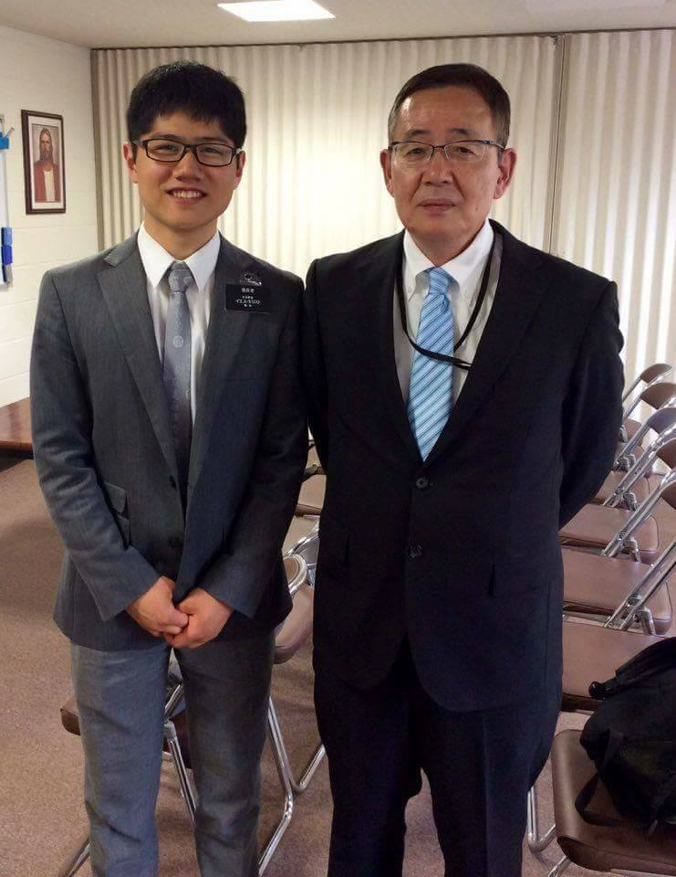
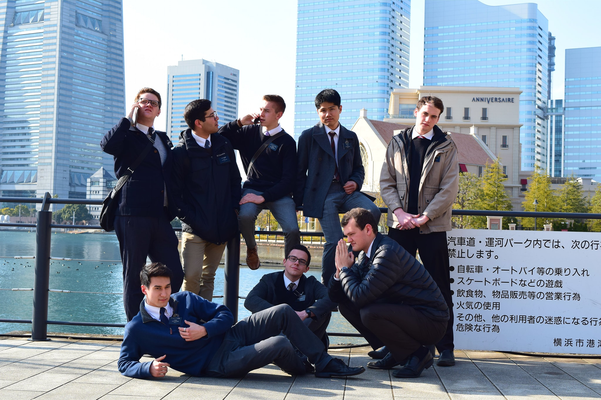
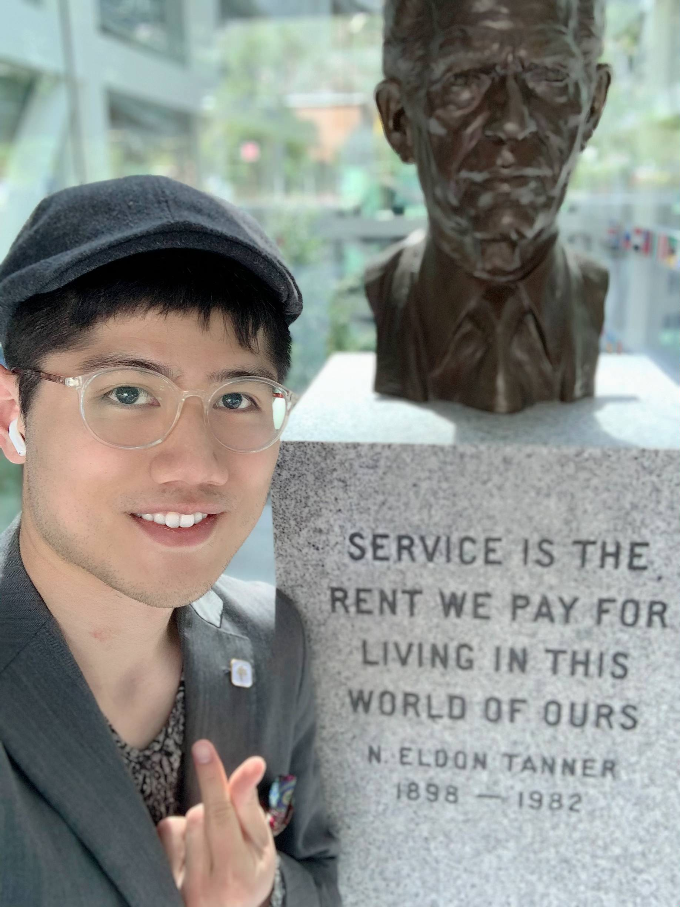

About Me
Self-Learner
I'm highly motivated, disciplined and a fast learner. I'm an ambitious and conscientious individual who is willing to embrace difficult tasks.
Adaptability | Diversity
Ability to think creatively and develop new and innovative solutions. Challenges enable my potential in troubleshooting and problem-solving.
Learn More →


